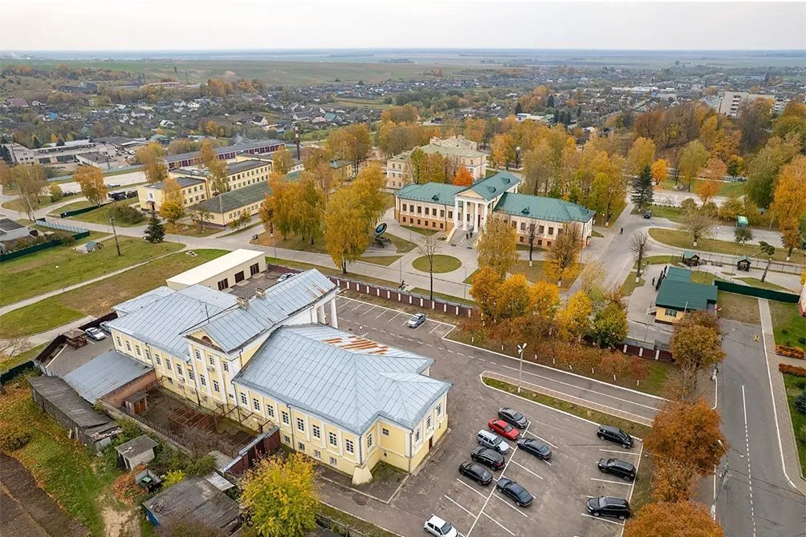

Воложин — один из древнейших городов Беларуси, впервые упомянутый в XIV веке. Город имеет богатую историю, связанную с известными шляхетскими родами, особенно с семьей Тышкевичей, которые владели городом на протяжении нескольких столетий.
В XIX веке Воложин стал важным культурным и образовательным центром благодаря знаменитой Воложинской иешиве — одной из крупнейших иудейских духовных академий в Европе. В советский период город стал районным центром и сохранил свою уникальную атмосферу, сочетающую белорусские, польские и еврейские культурные традиции.
Знаменитая иешива, основанная в 1803 году, была одним из важнейших центров еврейского образования в Восточной Европе. Сегодня здание иешивы является памятником архитектуры и истории.
Католический храм, построенный в 1816 году в стиле классицизма. Костел является архитектурной доминантой города и действует до сих пор.
Сохранившиеся постройки усадебного комплекса знаменитого рода Тышкевичей, включая флигели и парк. Усадьба является памятником усадебно-парковой архитектуры.
Музей рассказывает об истории Воложинского края, его культурных традициях и известных людях. В экспозиции представлены археологические находки, этнографические материалы и исторические документы.
Современный герб Воложина был утвержден в 2006 году и представляет собой варяжский щит, в голубом поле которого изображены серебряные ворота с тремя башнями, увенчанными шпилями с золотыми флюгерами. Герб символизирует историческое прошлое города как центра ремесел и торговли.
Воложин расположен в Минской области, примерно в 75 км к западу от Минска. Город находится на пересечении важных автомобильных дорог, соединяющих столицу с Гродненской областью и Литвой.
В городе регулярно проводятся культурные мероприятия, фестивали и праздники, посвященные истории и традициям Воложинского края. Для актуальной информации можно посетить официальный сайт района:
Сегодня Воложин — уютный районный центр с населением около 10 тысяч человек. Город сохранил свою историческую планировку и уникальную атмосферу. Развивается туризм, работают предприятия пищевой и легкой промышленности. Воложин привлекает поситителей своими памятниками истории, красивой природой и гостеприимством жителей.